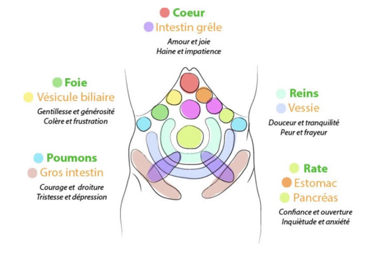

Le Chi Nei Tsang est un massage à l'huile des organes de l'abdomen, pratiqué depuis des millénaires par les moines taoïstes. Cette pratique est utilisée pour détoxiquer les différents organes et fortifier le corps. C'est un nettoyage corporel et émotionnel qui est réalisé, en vue d'harmoniser l'énergie et améliorer la santé.
L'Origine du Chi Nei Tsang
Le Chi Nei Tsang puise ses sources dans la médecine traditionnelle chinoise. Ce massage est pratiqué depuis des années par les moines taoïstes. Ces sages avaient remarqué la tendance naturelle à l'obstruction et la congestion des organes internes de l'abdomen. Ces obstructions nuisent à la libre circulation de l'énergie vitale interne et favorisent la formations d'émotions négatives (la peur, la colère, l'anxiété, l'inquiétude ou la dépression). Notre mode de vie contemporain favorise également la formation de congestion des organes (surcharge de travail, stress, drogues, toxines, mauvaise alimentation...). Les émotions négatives et énergies toxiques peuvent créer un cycle de négativité et stress permanent. Le Chi Nei Tsang est une méthode pour dégager l'énergie négative bloquée en travaillant sur 4 axes principaux : détoxiquer, restructurer et renforcer, digérer les émotions, développer une meilleure conscience de soi.
Réservez votre séance

Les 4 axes principaux :
- Détoxiquer : Eliminer les stagnations et améliorer l'élimination. Le Chi Nei Tsang fortifie le système immunitaire et renforce la résistance aux maladies.
- Restructurer et renforcer : Le Chi Nei Tsang révèle les tensions et restaure la vitalité. Il travaille sur les structure viscérales et le positionnement des organes internes pour un meilleur fonctionnement. C'est une aide aux problèmes posturaux résultant de déséquilibres viscéraux. Il est utile pour les douleurs chroniques.
- Digérer les émotions : Toute émotion non digérée est déposée et entreposée dans notre système digestif en attente d'être absorbée. Si la digestion émotionnelle ne se fait pas l'équilibre émotionnel est impacté.
- Développement d'une meilleure conscience de soi : Nous sommes responsable de notre propre santé. Avec le Chi Nei Tsang les personnes apprennent les techniques fondamentales d'auto-massage et de respiration profonde. Une alimentation et un style de vie mieux approprié renforceront ces effets.
Contre indications :
Le Chi Nei Tsang ne peut se pratiquer les personnes ayant un pacemaker, les personnes en cours de traitement d'un cancer et les femmes enceintes.
Le Chi Nei Tsang n'a aucun caractère érotique ou sexuel.
A chaque organe correspond une couleur et des émotions négatives et positives. Pendant le CNT (Chi Nei Tsang) les émotions négatives sont expirées et les émotions positives inspirées afin de nettoyer l'organisme à un niveau émotionnel.

Je me suis formée au protocole Chi Nei Tsang auprès de Béatrice Filosa, enseignante certifiée en MTC Université de Shangaï.